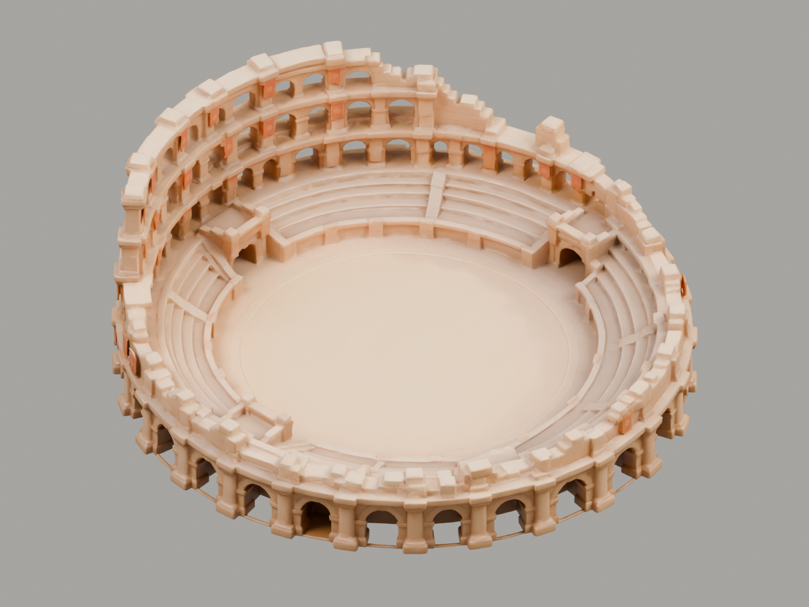
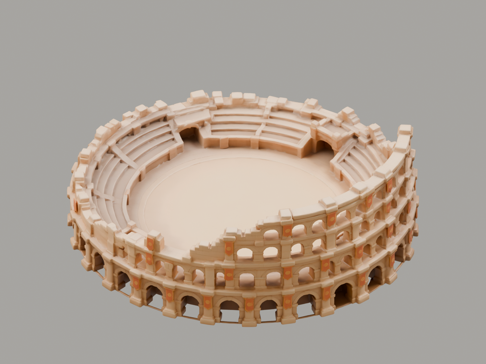
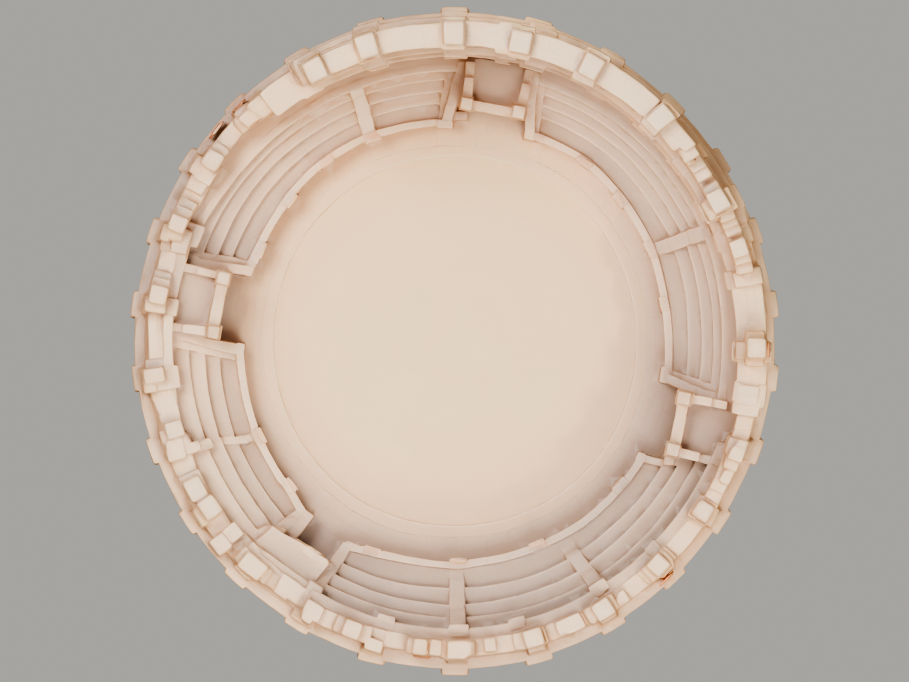

Wankai · Generated model · Base reviewColosseum · Tripo v01
The first 3D trial from the selected original, left and back concept images. These views show the actual downloaded GLB, with inspection lighting and cameras.
95,130 triangles · one mesh/material · 2048×2048 texture · 3.96 MB · 25 credits total.

Open arena and tiered interior.
Rear façade and uneven wall profile.
Overhead geometry inspection.Review the base before finishing. Some arches, stone seams, stairs and terraces are soft or merged. Floor and architecture share one mesh. No runtime integration or game-readiness claim; no archaeological-survey claim. Original source remains unchanged.
Generation and export provenance · Geometry inspection